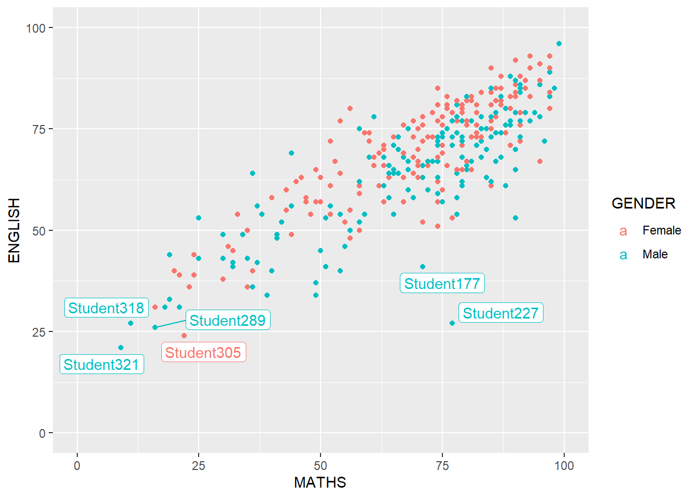
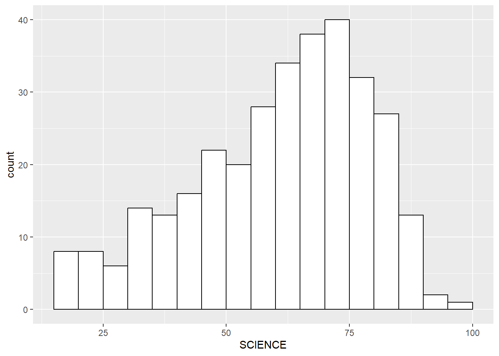
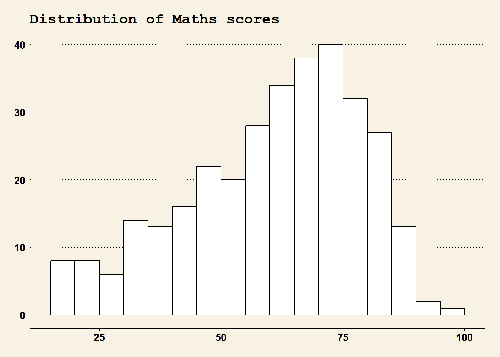
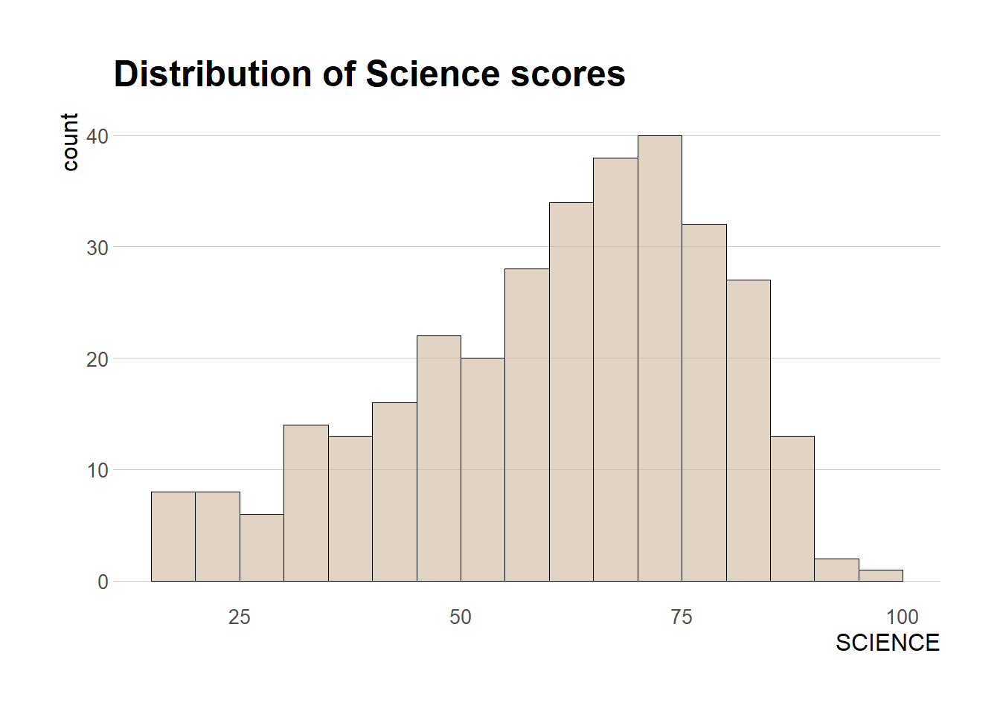
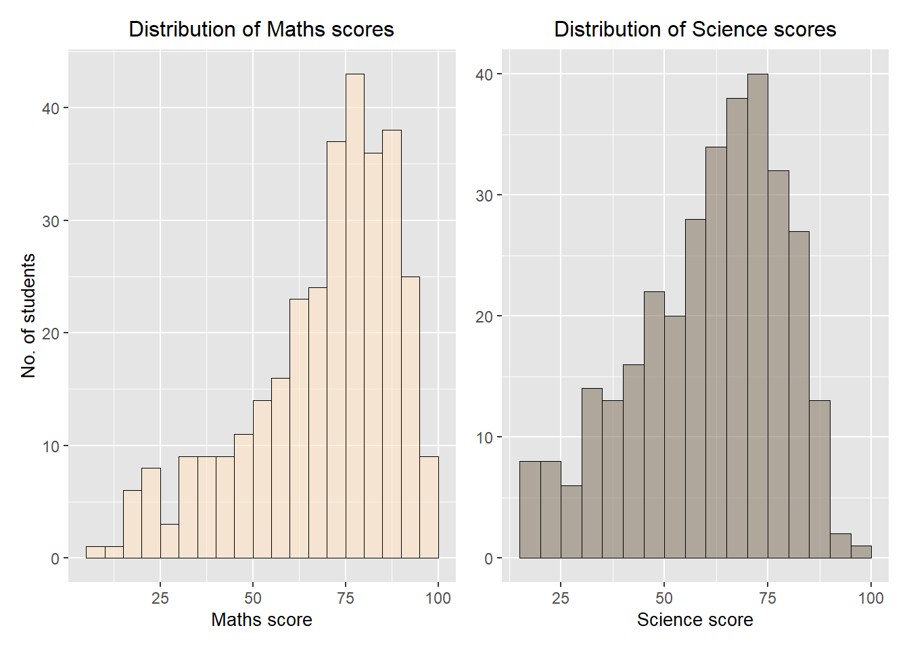
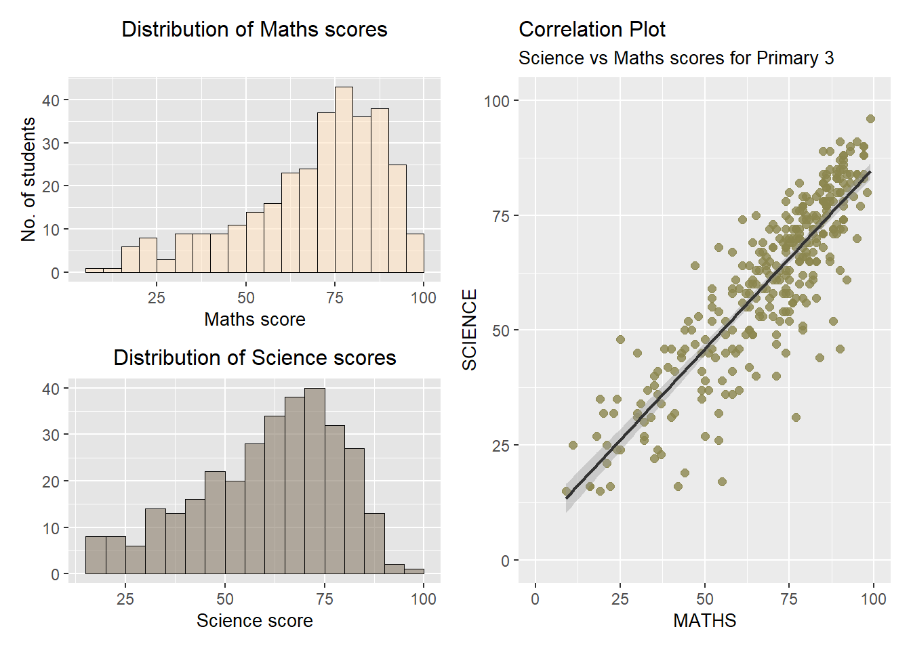
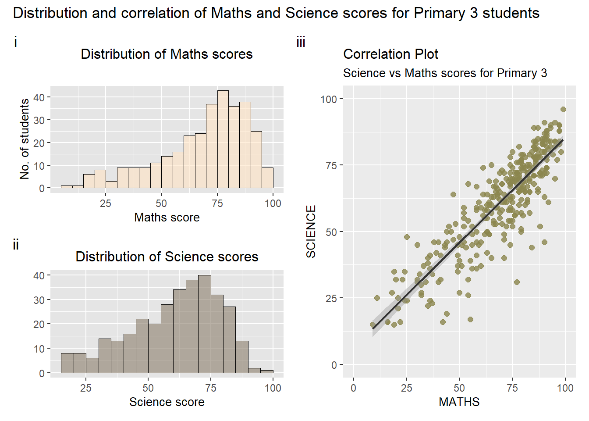
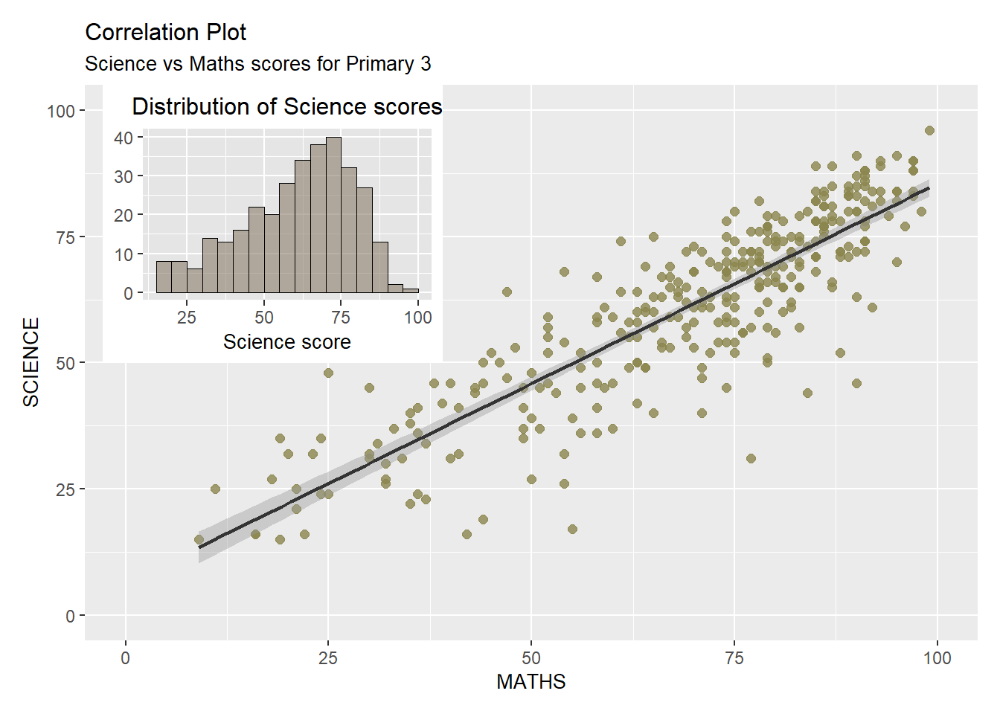
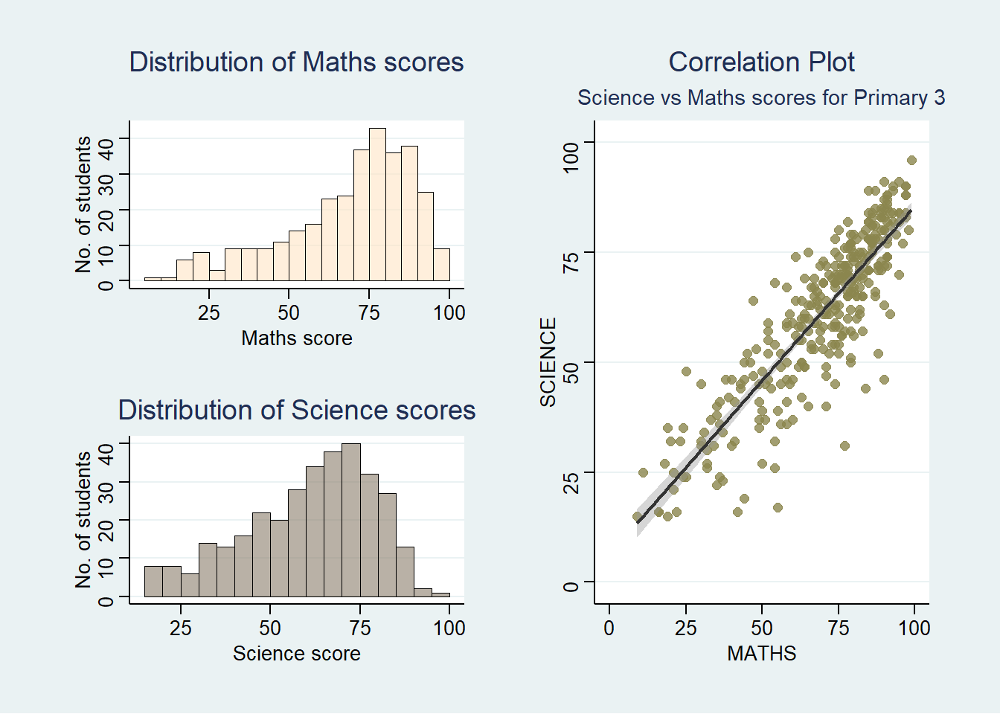

pacman::p_load(ggrepel, patchwork,
ggthemes, hrbrthemes,
tidyverse) Hands-on Exercise 2
Beyond ggplot2 Fundamentals
1 Getting Started
1.1 Loading R packages
1.2 Importing data
exam_data <- read_csv("data/exam_data.csv")2 Beyong ggplot2 Annotation: ggrepel
ggrepel provides geoms for ggplot2 to repel overlapping text labels:
geom_text_repel adds text directly to the plot. geom_label_repel draws a rectangle underneath the text, making it easier to read. The text labels repel away from each other and away from the data points.
ggplot(data= exam_data,
aes(x= MATHS,
y= ENGLISH,
colour= GENDER)) +
geom_point() +
geom_label_repel(aes(label=ID),
label.padding = 0.2,
label.size = 0.2) +
xlim(0,100) +
ylim (0,100)
3 Beyong ggplot2 Themes
gglot2 comes with 10 built-in themes. Theme could be modified by using theme() and element_.
The code chunk below plots basic plot with modification to color and fill of the bar before any themes were applied.
ggplot(data= exam_data,
aes(x= SCIENCE))+
geom_histogram(binwidth = 5,
boundary = 5,
color= "black",
fill= "white") 
3.1 Working with ggtheme package
ggthemes provides extra theme, geoms, and scales for ggplot2. Refer to these (i) link (ii) link for examples.
ggplot(data= exam_data,
aes(x= SCIENCE))+
geom_histogram(binwidth = 5,
boundary = 5,
color= "black",
fill= "white") +
theme_wsj(base_size = 10,
color = "brown",
base_family = "sans",
title_family = "mono") +
ggtitle("Distribution of Maths scores") +
theme(plot.title= element_text(size= 15))
3.2 Working with hrbrthemes package
hrbrthemes is a very focused package that provides typography-centric themes and theme components for ggplot2. Consult this vignette to learn more.
ggplot(data= exam_data,
aes(x= SCIENCE))+
geom_histogram(binwidth = 5,
boundary = 5,
color = "black",
fill = "bisque3",
alpha = 0.6,
linewidth =0.3) +
ggtitle("Distribution of Science scores") +
theme_ipsum(axis_title_size = 12,
base_size = 10,
grid_col = "grey80",
grid = "Y")
What can we learn from the code chunk above?
axis_title_sizeargument is used to increase the font size of the axis title to 18,base_sizeargument is used to increase the default axis label to 15, andgridargument is used to remove the x-axis grid lines.
4 Beyong Single Graph
Patchwork which is specially designed for combining separate ggplot2 graphs into a single figure.
Patchwork package has a very simple syntax where we can create layouts super easily. Here’s the general syntax that combines:
- Two-Column Layout using the Plus Sign +.
- Parenthesis () to create a subplot group.
- Two-Row Layout using the Division Sign /
To learn more about, refer to Plot Assembly.
4.1 Combining 2 graphs using ’ + ’
p1 <- ggplot(data= exam_data,
aes(x= MATHS))+
geom_histogram(binwidth = 5,
boundary = 5,
color = "black",
fill = "bisque",
alpha = 0.6,
linewidth =0.3) +
labs(x= "Maths score",
y= "No. of students",
title="Distribution of Maths scores") +
theme(plot.title= element_text(size= 12, hjust= 0.5),
axis.title= element_text(size= 10),
panel.background = element_rect(fill= "grey90"))
p2 <- ggplot(data= exam_data,
aes(x= SCIENCE))+
geom_histogram(binwidth = 5,
boundary = 5,
color = "black",
fill = "bisque4",
alpha = 0.6,
linewidth =0.3) +
labs(x= "Science score",
y= "No. of students",
title="Distribution of Science scores") +
theme(plot.title= element_text(size= 12, hjust= 0.5),
axis.title= element_text(size= 10),
panel.background = element_rect(fill= "grey90"),
axis.title.y = element_blank())
p1 + p2
4.2 Combining 3 graphs using ’ | ’ ’ / ’ ’ ( ) ’
p3 <- ggplot(data = exam_data,
aes(MATHS, SCIENCE)) +
geom_point(size = 2,
color = "khaki4",
alpha = 0.8) +
geom_smooth(method = lm,
size = 0.8,
color = "grey20") +
coord_cartesian(xlim = c(0,100),
ylim = c(0,100)) +
labs(title = "Correlation Plot",
subtitle = "Science vs Maths scores for Primary 3") +
theme(plot.title=element_text(size= 12),
plot.subtitle=element_text(size= 10),
axis.title = element_text(size= 10))
(p1 / p2) | p3
4.3 Adding annotation
((p1 / p2) | p3) +
plot_annotation(title= "Distribution and correlation of Maths and Science scores for Primary 3 students",
tag_levels = 'i')
4.4 Insert Figures with Inset_element
p3 + inset_element(p2,
left = 0.02,
bottom = 0.5,
right = 0.4,
top = 1)
4.5 Creating a composite figure by using patchwork and ggtheme
patchwork <- (p1 / p2) | p3
patchwork & theme_stata()